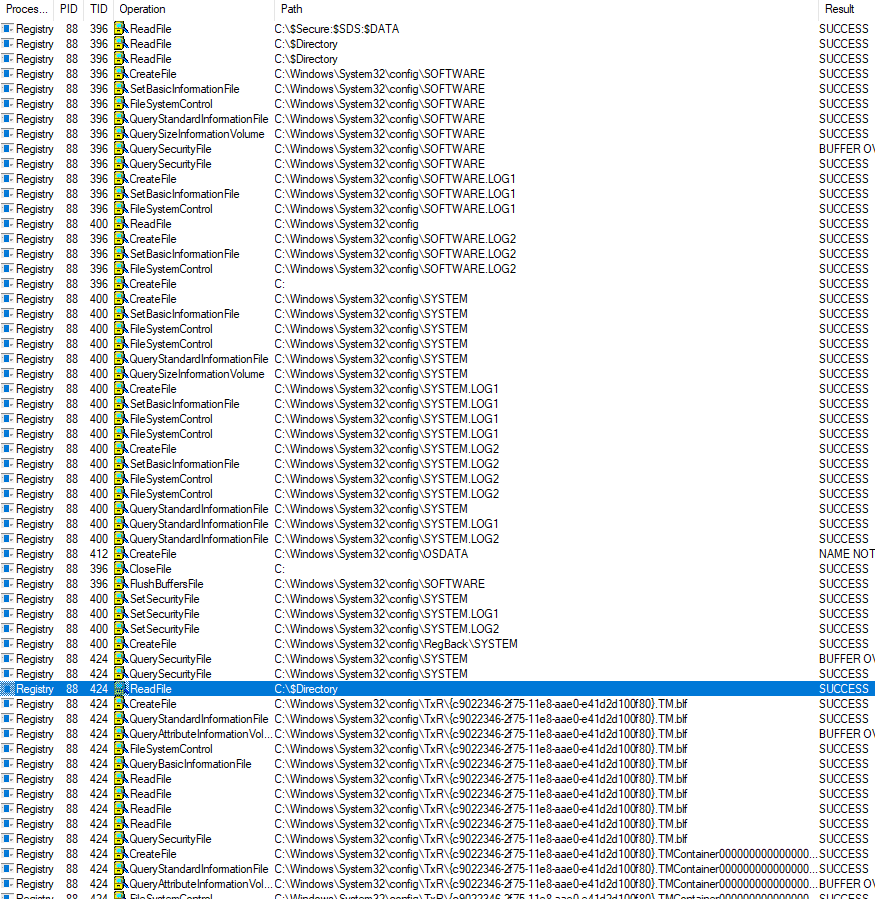

Вторым сюрпризом Windows 10 build 17133, который я хочу описать, стал
новый системный процесс Registry. Лично меня сильно удивило, что теперь при
старте BOOT-драйвера есть не только процессы
PsInitialSystemProcess
и nt!PsIdleProcess, но и новый процесс Registry:
1: kd> k
ChildEBP RetAddr
8a803918 822a8b94 pcw!DriverEntry
8a803978 822a88d9 nt!IopInitializeBuiltinDriver+0x292
8a8039ec 822a8691 nt!PnpInitializeBootStartDriver+0xe7
8a803ba8 822ade67 nt!IopInitializeBootDrivers+0x653
8a803c20 822aae63 nt!IoInitSystemPreDrivers+0x6f3
8a803c2c 820739f8 nt!IoInitSystem+0xd
8a803c38 81d5c584 nt!Phase1Initialization+0x36
8a803c70 81ddfb8d nt!PspSystemThreadStartup+0x4a
8a803c7c 00000000 nt!KiThreadStartup+0x15
1: kd> !process 0 0
**** NT ACTIVE PROCESS DUMP ****
PROCESS 89a85040 SessionId: none Cid: 0004 Peb: 00000000 ParentCid: 0000
DirBase: 001a8000 ObjectTable: 89c04000 HandleCount: 89.
Image: System
PROCESS 89b20a00 SessionId: none Cid: 0058 Peb: 00000000 ParentCid: 0004
DirBase: 7d14c040 ObjectTable: 89c20000 HandleCount: 0.
Image: Registry
1: kd> !PROCESS 89b20a00
PROCESS 89b20a00 SessionId: none Cid: 0058 Peb: 00000000 ParentCid: 0004
DirBase: 7d14c040 ObjectTable: 89c20000 HandleCount: 0.
Image: Registry
VadRoot 00000000 Vads 0 Clone 0 Private 6. Modified 0. Locked 0.
DeviceMap 00000000
Token 89c1a278
ElapsedTime 00:00:00.244
UserTime 00:00:00.000
KernelTime 00:00:00.000
QuotaPoolUsage[PagedPool] 4224
QuotaPoolUsage[NonPagedPool] 0
Working Set Sizes (now,min,max) (6, 50, 345) (24KB, 200KB, 1380KB)
PeakWorkingSetSize 1
VirtualSize 0 Mb
PeakVirtualSize 0 Mb
PageFaultCount 9
MemoryPriority BACKGROUND
BasePriority 8
CommitCharge 9
THREAD 89b4a040 Cid 0058.005c Teb: 00000000 Win32Thread: 00000000 WAIT: (Executive) KernelMode Non-Alertable
81f07dc0 SynchronizationEvent
Not impersonating
Owning Process 89b20a00 Image: Registry
Attached Process N/A Image: N/A
Wait Start TickCount 72 Ticks: 17 (0:00:00:00.265)
Context Switch Count 1 IdealProcessor: 0
UserTime 00:00:00.000
KernelTime 00:00:00.000
Win32 Start Address nt!CmpDummyThreadRoutine (0x8209dcf4)
Stack Init 8a85bca0 Current 8a85ba94 Base 8a85c000 Limit 8a859000 Call 00000000
Priority 8 BasePriority 8 PriorityDecrement 0 IoPriority 2 PagePriority 5
ChildEBP RetAddr
8a85baac 81d357a7 nt!KiSwapContext+0x19 (FPO: [Uses EBP] [1,0,4])
8a85bb38 81d35097 nt!KiSwapThread+0x2a7 (FPO: [Non-Fpo])
8a85bb8c 81d31fe0 nt!KiCommitThreadWait+0x117 (FPO: [Non-Fpo])
8a85bc1c 8209dd07 nt!KeWaitForSingleObject+0x290 (FPO: [Non-Fpo])
8a85bc38 81d5c584 nt!CmpDummyThreadRoutine+0x13 (FPO: [1,0,4])
8a85bc70 81ddfb8d nt!PspSystemThreadStartup+0x4a (FPO: [Non-Fpo])
8a85bc7c 00000000 nt!KiThreadStartup+0x15
Адрес нового процесса хранится в не-экспортируемой переменной ядра CmpRegistryProcess:
.data:00688DB0 _CmpRegistryProcess dd ? ; DATA XREF: CmSiProcessTupleInitialize(x)|w
.data:00688DB0 ; CmSiProcessTupleStartFromHandle(x,x,x)+34|w
.data:00688DB0 ; HvLoadHive(x,x)+179|o
.data:00688DB0 ; CmpInitializeLazyWriters()+54|r
.data:00688DB0 ; CmpInitializeSystemHivesLoad():loc_81430C|r
.data:00688DB0 ; CmpInitializeRegistryProcess()+C2|r
.data:00688DB0 ; CmpCreateRegistryThread(x,x,x,x)+8|r
По перекрестным ссылкам и boot-log'у (см. картинку ниже) видно, что в этот
процесс, как минимум, перенесен код работы с hive- файлами реестра:

Внешне процесс Registry похож на уже известный process MemCompression. Оба
этих процесса созданы вызовом не-экспортируемой функции PsCreateMinimalProcess:
PAGE:00815084 _PsCreateMinimalProcess@40 proc near ; CODE XREF: SmFirstTimeInit(ulong,ulong)+35E|p
PAGE:00815084 ; CmpInitializeRegistryProcess()+56|p
PAGE:00815084 ; PspCreateProcess(x,x,x,x,x,x,x,x,x)+E2F97|p
PAGE:00815084 ; PspCreatePicoProcess(x,x,x)+103|p
PAGE:00815084 ; VmCreateMemoryProcess(x,x,x,x,x,x)+5F|p
Про Minimal процессы можно обзорно почитать в соотвествующей главе статьи про
Pico процессы.
ΞρεΤΙκ